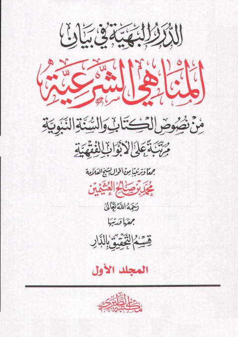
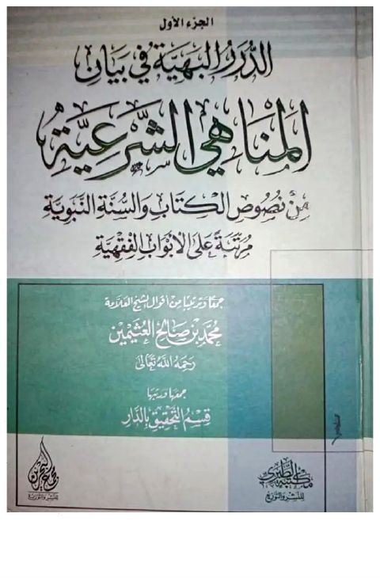

قسم التحقيق بالدار
Author
Resources

الدرر البهية في بيان المناهي الشرعية من نصوص الكتاب والسنة النبوية مرتبة على الأبواب الفقهية- نسخة مصغرة الدرر البهية في بيان المناهي الشرعية من نصوص الكتاب والسنة النبوية مرتبة على الأبواب الفقهية- نسخة مصغرة محمد بن صالح العثيمين الدرر البهية في بيان المناهي الشرعية من نصوص الكتاب والسنة النبوية مرتبة على الأبواب الفقهية
الدرر البهية في بيان المناهي الشرعية من نصوص الكتاب والسنة النبوية مرتبة على الأبواب الفقهية
محمد بن صالح العثيمين
الدرر البهية في بيان المناهي الشرعية من نصوص الكتاب والسنة النبوية مرتبة على الأبواب الفقهية
الدرر البهية في بيان المناهي الشرعية من نصوص الكتاب والسنة النبوية مرتبة على الأبواب الفقهية
محمد بن صالح العثيمين

الدرر البهية في بيان المناهي الشرعية من نصوص الكتاب والسنة النبوية مرتبة على الأبواب الفقهية- ط أخرى الدرر البهية في بيان المناهي الشرعية من نصوص الكتاب والسنة النبوية مرتبة على الأبواب الفقهية- ط أخرى محمد بن صالح العثيمين